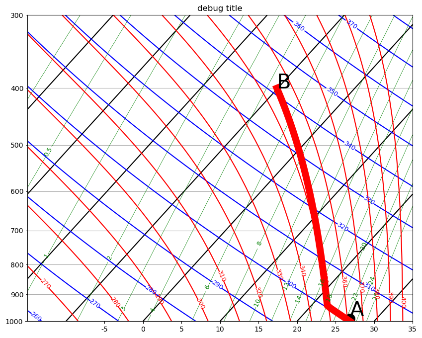
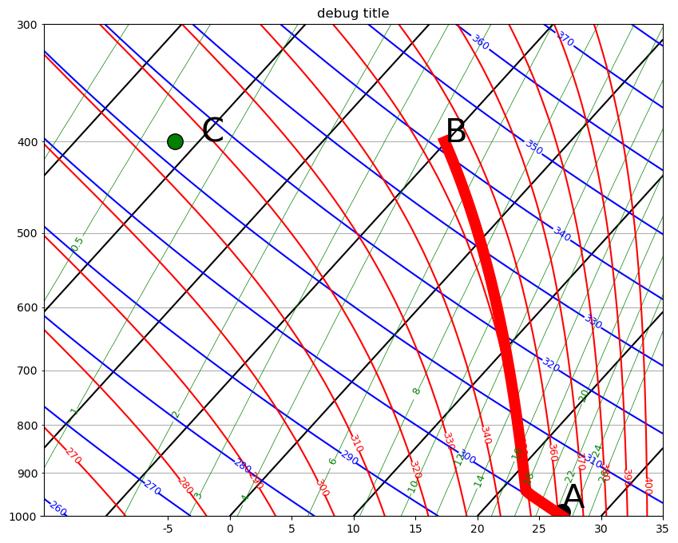
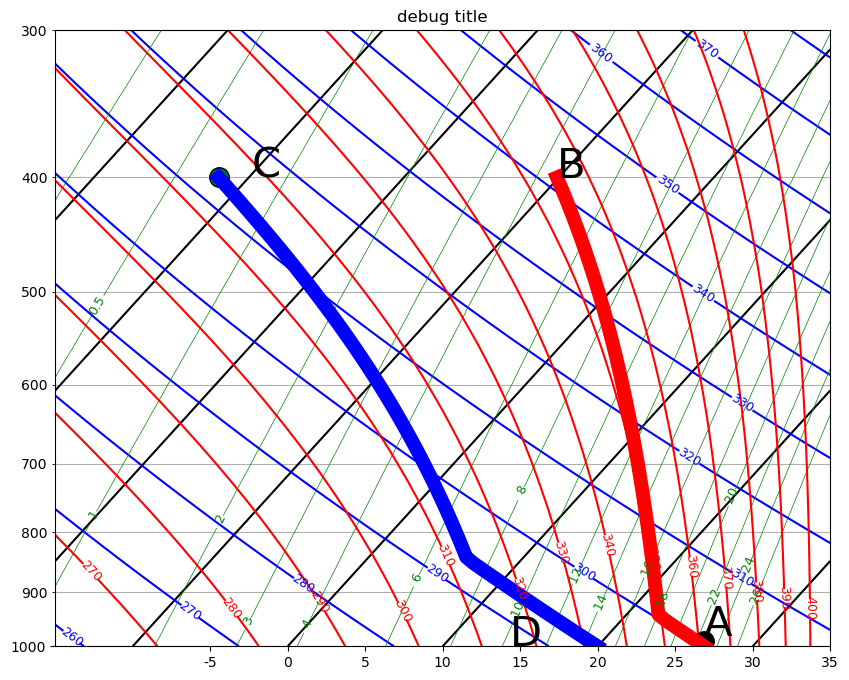

Tropical Heat Engine#
The link to tropical_engine_solution.ipynb
This notebook calculate the efficiency of the following Carnot engine#
pseudo-adiabatic ascent in the tropical Pacific,
surface pressure = 1000 hPa
the SST is 300 K and
the relative humidity is 80%.
Air rises to 400 hPa and loses 80% of its liquid water
Cooling at a constant pressure of 400 hPa by 20 K, with no change in total water
Descent to 1000 hPa, conserving water
Heating and moistening at at 1000 hPa returning parcel to
This notebook:#
1. Calculates the change in enthalpy at the surface and at 400 hPa, including both sensible and latent heat terms.
2. Finds the total work done by the engine, and its efficiency.
3. Finds the percentage of the total heat change that is due to addition and remove of water during the cycle.
from matplotlib import pyplot as plt
import numpy as np
from a405.skewT.fullskew import makeSkewWet
from a405.thermo.thermlib import find_esat, find_Td,find_thetaet,find_lcl,tinvert_thetae
from a405.thermo.thermlib import find_lv, find_rsat
from a405.thermo.thermlib import convertTempToSkew
from a405.thermo.constants import constants as c
from a405.utils.helper_funs import make_tuple
A. get the surface enthalpy in the tropics (point A)#
def calc_enthalpy(point_dict):
"""
Calculate the enthalpy and total water mixing ratio
for an air parcel, given a dictionary or parameters
Parameters
----------
point_dict: dictionary
dictionary with the following keys
['id','temp','rv','rl','press']
units: point letter, K kg/kg kg/kg Pa
Returns
-------
vals: named tuple
tuple with dictionary values plus rt (kg/kg) and enthalpy (J/kg)
"""
point_dict['rt'] = point_dict['rv'] + point_dict['rl']
vals = make_tuple(point_dict)
cp = c.cpd + vals.rt*c.cl
point_dict['enthalpy'] = cp*vals.temp + find_lv(vals.temp)*vals.rv
vals = make_tuple(point_dict)
return vals
def format_tup(the_tup):
"""
format a tuple returned from calc_enthalpy for output
"""
the_string="""
point {id:}
temp: {temp:6.3f} K
press: {press:6.3g} Pa
rv: {rv:6.3g} kg/kg
rl: {rl:6.3g} kg/kg
rt: {rt:6.3g} kg/kg
enthalpy: {enthalpy: 8.3g} J/kg
"""
return the_string.format_map(the_tup._asdict())
pa2hPa = 1.e-2
A_press = 1.e5 #Pa
B_press = 4.e4 #Pa
A_temp = 300 #K
RH = 0.8
e = find_esat(A_temp)*RH
A_rv = c.eps*e/(A_press - e)
A_Td = find_Td(A_rv,A_press)
print('tropical surface dewpoint: {} K'.format(A_Td))
A_thetae=find_thetaet(A_Td,A_rv,A_temp,A_press)
print('tropical surface thetae: {} K'.format(A_thetae))
A_temp,A_rv,A_rl = tinvert_thetae(A_thetae,A_rv,A_press)
fields=['id','temp','rv','rl','press']
A_dict = dict(zip(fields,('A',A_temp,A_rv,A_rl,A_press)))
A_tup = calc_enthalpy(A_dict)
print(format_tup(A_tup))
tropical surface dewpoint: 296.2618676251417 K
tropical surface thetae: 349.3616804125229 K
point A
temp: 300.000 K
press: 1e+05 Pa
rv: 0.0181 kg/kg
rl: 0 kg/kg
rt: 0.0181 kg/kg
enthalpy: 3.71e+05 J/kg
B. Lift to 400 hPa and remove 80% of the liquid water#
fig,ax = plt.subplots(1,1,figsize=[10,8])
ax,skew = makeSkewWet(ax,corners=[-15,35])
lcl_temp, lcl_press = find_lcl(A_Td,A_tup.temp,A_tup.press)
xplot=convertTempToSkew(A_tup.temp - c.Tc,A_tup.press*pa2hPa,skew)
bot=ax.plot(xplot, A_tup.press*pa2hPa-10., 'ko', markersize=14, markerfacecolor='k')
ax.text(xplot,A_tup.press*pa2hPa-20.,'A',fontsize=30)
pressrange=np.arange(1000,395.,-10.)
trop_adiabat=[]
for press in pressrange:
temp,rv,rl = tinvert_thetae(A_thetae,A_tup.rt,press*1.e2)
xtemp = convertTempToSkew(temp - c.Tc,press,skew)
trop_adiabat.append(xtemp)
ax.plot(trop_adiabat,pressrange,'r-',lw=10)
B_press=400.e2 #Pa
temp,rv,rl = tinvert_thetae(A_thetae,A_tup.rt,B_press)
rl = 0.2*rl #rain out 80% of liquid
B_dict = dict(zip(fields,('B',temp,rv,rl,B_press)))
ax.text(trop_adiabat[-1],B_press*pa2hPa,'B',fontsize=30)
B_tup = calc_enthalpy(B_dict)
print(format_tup(B_tup))
point B
temp: 263.033 K
press: 4e+04 Pa
rv: 0.00445 kg/kg
rl: 0.00273 kg/kg
rt: 0.00718 kg/kg
enthalpy: 2.83e+05 J/kg

top_temp,top_rv,top_rl = tinvert_thetae(A_thetae,B_tup.rt,B_tup.press)
C_temp = top_temp - 20.
C_rt = B_tup.rt #conserve total water from B to C
C_rv = find_rsat(C_temp,B_tup.press)
C_rl = C_rt - C_rv #cool and condense more liquid with constant rt
C_dict = dict(zip(fields,('C',C_temp,C_rv,C_rl,B_tup.press)))
C_tup = calc_enthalpy(C_dict)
C_thetae = find_thetaet(C_tup.temp,C_tup.rt,C_tup.temp,B_tup.press)
xplot=convertTempToSkew(C_tup.temp - c.Tc,C_tup.press*pa2hPa,skew)
top=ax.plot(xplot, C_tup.press*pa2hPa, 'ko', markersize=14, markerfacecolor='g')
ax.text(xplot*0.99, C_tup.press*pa2hPa,'C',fontsize=30)
print(format_tup(C_tup))
display(fig)
point C
temp: 241.210 K
press: 4e+04 Pa
rv: 0.00066 kg/kg
rl: 0.00652 kg/kg
rt: 0.00718 kg/kg
enthalpy: 2.51e+05 J/kg

D. descend adiabatically to surface#
C_adiabat=[]
for press in pressrange:
temp,rv,rl = tinvert_thetae(C_thetae,C_tup.rt,press*1.e2)
xtemp = convertTempToSkew(temp - c.Tc,press,skew)
C_adiabat.append(xtemp)
#
# now go to the surface
#
press=1000.
temp,rv,rl = tinvert_thetae(C_thetae,C_tup.rt,press*1.e2)
D_dict = dict(zip(fields,('D',temp,rv,rl,press)))
D_tup = calc_enthalpy(D_dict)
ax.plot(C_adiabat,pressrange,'b-',lw=10)
ax.text(C_adiabat[0]*1.03,pressrange[0],'D',fontsize=30)
print(format_tup(D_tup))
display(fig)
point D
temp: 293.124 K
press: 1e+03 Pa
rv: 0.00718 kg/kg
rl: 0 kg/kg
rt: 0.00718 kg/kg
enthalpy: 3.22e+05 J/kg

Questions#
In the cell below find:
the heating in and out \(Q_{in}\) and \(Q_out\) (see equation 17 in my Carnot cycle notes
the total work/kg done by the heat engine
the efficiency of the heat engine
Solution#
Enthalpy change from D to A#
deltaT_AD = A_tup.temp - D_tup.temp
deltaRv_AD = A_tup.rv - D_tup.rv
print(f'from D to A, temp increases by {deltaT_AD:5.3f} K, vapor by {deltaRv_AD*1.e3:5.3f} g/kg')
from D to A, temp increases by 6.876 K, vapor by 10.920 g/kg
\(\Delta Q_{in}\)#
deltaQin = A_tup.enthalpy - D_tup.enthalpy
Enthalpy change from B to C#
deltaT_BC = B_tup.temp - C_tup.temp
deltaRv_BC = B_tup.rv - C_tup.rv
print(f'from B to C, temp decreases by {deltaT_BC:5.3f} K, vapor by {deltaRv_BC*1.e3:5.3f} g/kg')
from B to C, temp decreases by 21.823 K, vapor by 3.789 g/kg
\(\Delta Q_{out}\) and heat engine efficiency#
deltaQout = B_tup.enthalpy - C_tup.enthalpy
print(f"deltaQin {deltaQin:6.4g} J/kg\ndeltaQout {deltaQout:6.4g} J/kg")
deltaQinVap = 2.5e6*(A_tup.rv - D_tup.rv)
deltaQoutVap = 2.5e6*(B_tup.rv - C_tup.rv)
print(f"deltaQin due to vapor= {deltaQinVap:6.4g} J/kg = {deltaQinVap/deltaQin*100:6.2f}%")
print(f"deltaQout due to vapor= {deltaQoutVap:6.4g} J/kg = {deltaQoutVap/deltaQout*100.:6.2f}%")
efficiency = (deltaQin - deltaQout)/deltaQin
print(f'heat engine efficiency is {efficiency*100:6.3g} %')
deltaQin 4.895e+04 J/kg
deltaQout 3.203e+04 J/kg
deltaQin due to vapor= 2.73e+04 J/kg = 55.77%
deltaQout due to vapor= 9474 J/kg = 29.58%
heat engine efficiency is 34.6 %